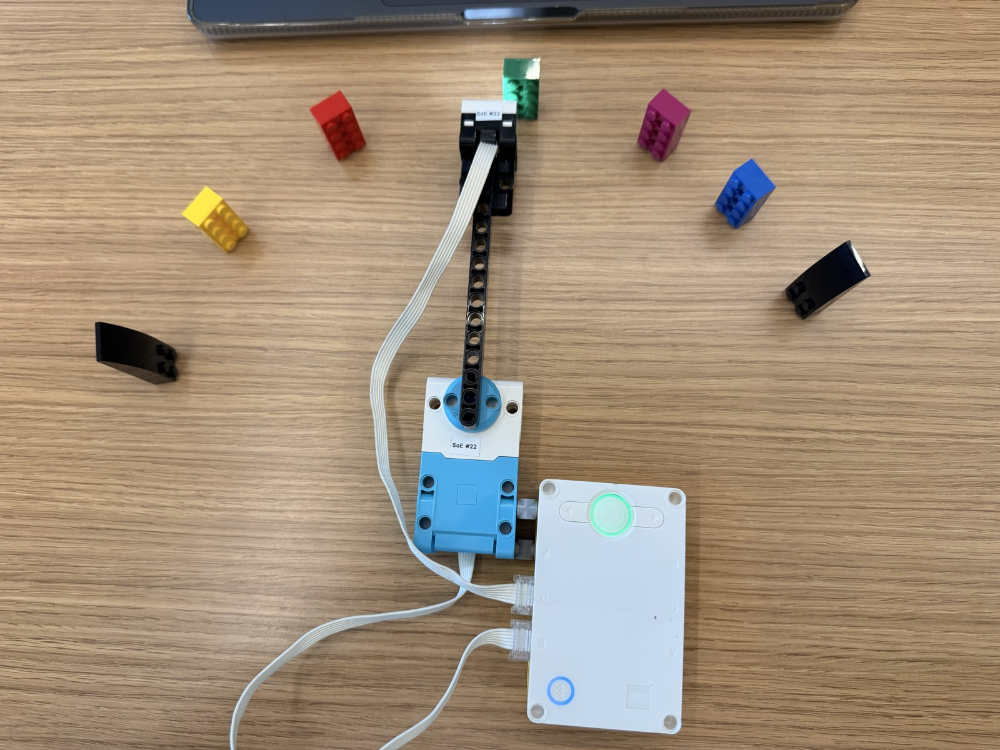
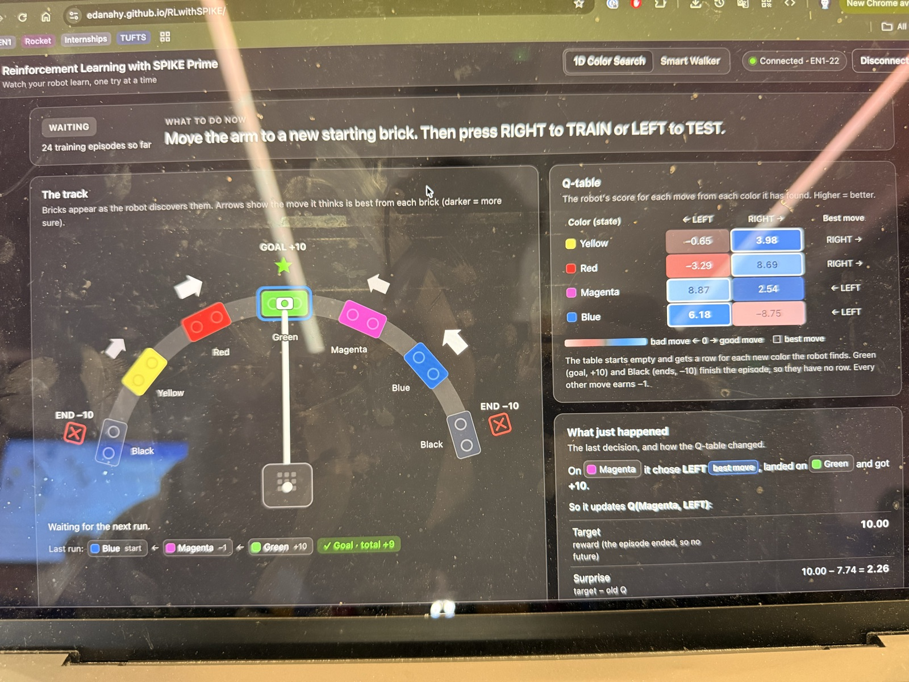

04 M — Sheet 18 / 18
Use Q-learning to find the goal brick while avoiding the boundaries.

A ten-minute class project on reinforcement learning. The brief: with Q-learning, get a robot to learn its way to a goal brick (green) while avoiding the boundary bricks (black) at the two ends of the track.
The program came ready from the course, written by Tanushree Burman at the Tufts CEEO, with a live web dashboard from Dr. E. My half was physical: the arm with the color sensor on its tip, the motor it pivots on, and a track of bricks spaced in an arc, black, yellow, red, green, magenta, blue, black. Then checking the setup with the course's read_color helper, and training it.
The learning is a table of scores. The state is the color under the sensor, the actions are sweep left or sweep right, and the rewards are +10 for the goal, -10 for a boundary, -1 for any other move, so shorter paths win. The table starts empty and grows a row every time the robot discovers a color it hasn't seen, and each move updates one score.

After 24 training episodes the table had the track figured out. Yellow and red point right, magenta and blue point left, everything toward the green in the middle. The dashboard caught a run that started on blue, went to magenta, then landed on green: goal in two moves, total reward +9.
The code below is the agent from the course's program, the part that does the learning. Everything it knows lives in the table self.q, and the whole of Q-learning is the one update line inside learn().
# ---- Rewards: how good or bad each outcome is ----
REWARD_GOAL = 10 # landed on the goal brick (the episode ends)
REWARD_BOUNDARY = -10 # landed on a boundary brick (the episode ends)
REWARD_STEP = -1 # any other move: a small cost, so shorter paths win
class QAgent:
def __init__(self, num_states, num_actions, alpha, gamma):
self.alpha = alpha
self.gamma = gamma
self.num_actions = num_actions
# The Q-table: one row per state, one column per action.
# Everything starts at 0 because the agent knows nothing yet.
self.q = [[0.0] * num_actions for _ in range(num_states)]
def add_state(self):
"""Add a row of zeros for a state the agent has just discovered."""
self.q.append([0.0] * self.num_actions)
def best_action(self, state):
"""The action with the highest Q-value in this state.
If several actions tie for best, pick one of them at random."""
row = self.q[state]
best = max(row)
ties = [a for a in range(len(row)) if row[a] == best]
return random.choice(ties)
def choose_action(self, state, epsilon):
"""Epsilon-greedy: usually EXPLOIT (pick the best known action),
but with probability epsilon EXPLORE (pick a random action).
Returns (action, explored)."""
if random.random() < epsilon:
return random.randint(0, len(self.q[state]) - 1), True
return self.best_action(state), False
def learn(self, state, action, reward, next_state, done):
"""The Q-learning update rule:
new Q = old Q + alpha * (reward + gamma * best_next - old Q)
best_next is the best Q-value in the state we landed in: how good
things look from here on. If the episode is over there is no future,
so best_next is 0. Returns (old Q, best_next, new Q)."""
old = self.q[state][action]
if done:
best_next = 0.0
else:
best_next = max(self.q[next_state])
target = reward + self.gamma * best_next
new = old + self.alpha * (target - old)
self.q[state][action] = new
return old, best_next, new